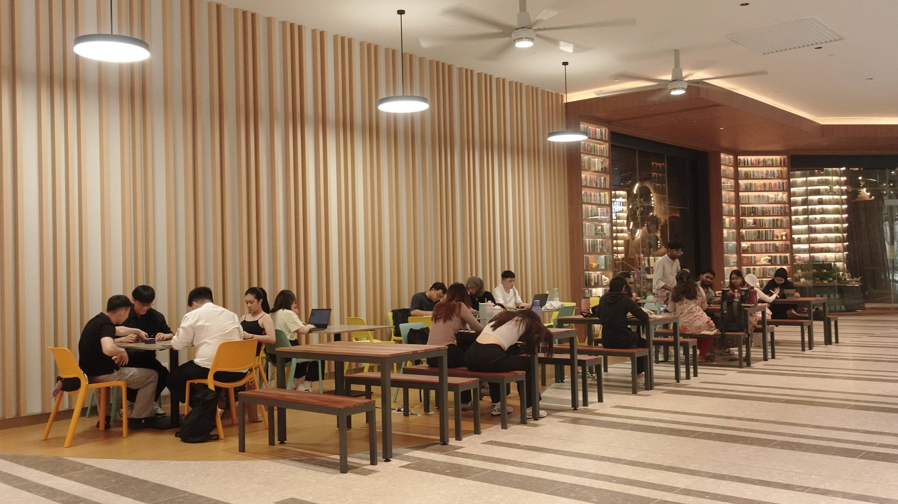
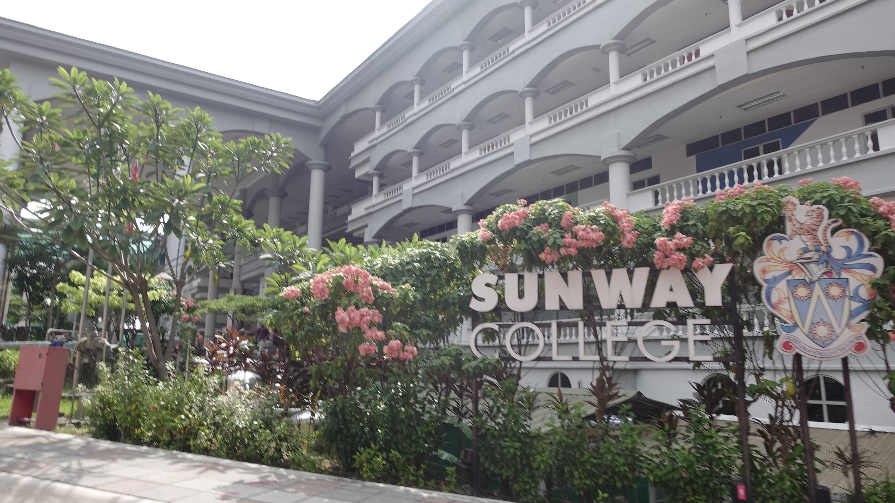
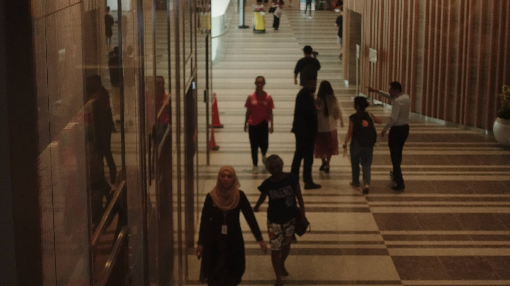
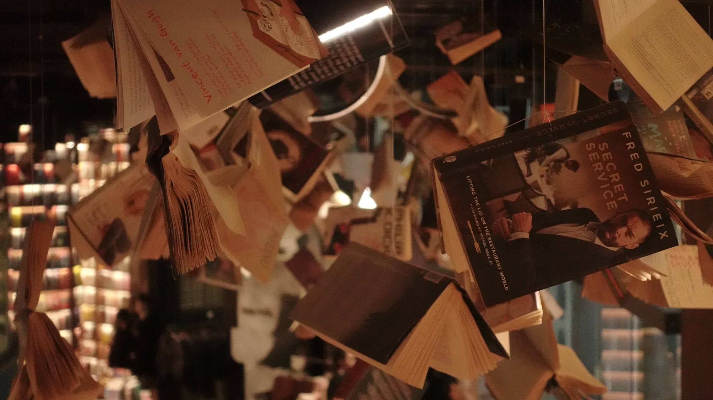

|
Where stories begin and every corner invites you to explore.
My first library hunting destination was The Sunway Library at Sunway Square. From the outside, the place already looked beautiful and welcoming. The warm lights and modern design made me excited to explore what was inside. Ho..ho.ho..Coming here again will bring back memories at that time when I'm got lost there by my scooter. As you know I'm not very good with route hahaha...
Well, this library is quite far if you from Sunway Pyramid (Hehe that's me). You have to walk over by footpath from Sunway Lagoon, Sunway University and finally Sunway Square T_T. To be honest, I thought the library inside Sunway Pyramid. I didnt know Sunway have so much buildings! Well good things to know.. So let's see what's inside!
Once I stepped inside, I was amazed by the interior design. The floating books on the ceiling immediately caught my attention, making the place feel creative and unique. There were also many comfortable reading spots where visitors which is students and public could study or simply enjoy a good book. I especially loved the tall bookshelves and the modern staircase, which made every corner look beautiful and worth exploring all the day!
A Peaceful Reading CornerThis cosy corner is perfect for anyone who enjoys reading in a quiet environment. The comfortable seats and natural lighting create a calm atmosphere, making it easy to stay focused for hours.
The library offers plenty of seating for reading, studying, and working. The peaceful atmosphere makes it a comfortable place to spend time, whether you're alone or with friends. Feeling hungry while studying? No worries! There's a dessert café where you can grab a slice of cake and a drink before getting back to your books.  One thing I really liked was the outdoor study area. It provides extra space for students who prefer a more open environment while still staying close to the library. The spacious layout and comfortable seating make it a great spot for group discussions or finishing assignments. Before You Go...

|
 Sunway University
My outfitcheck!
 So many students~
 Floating books
|